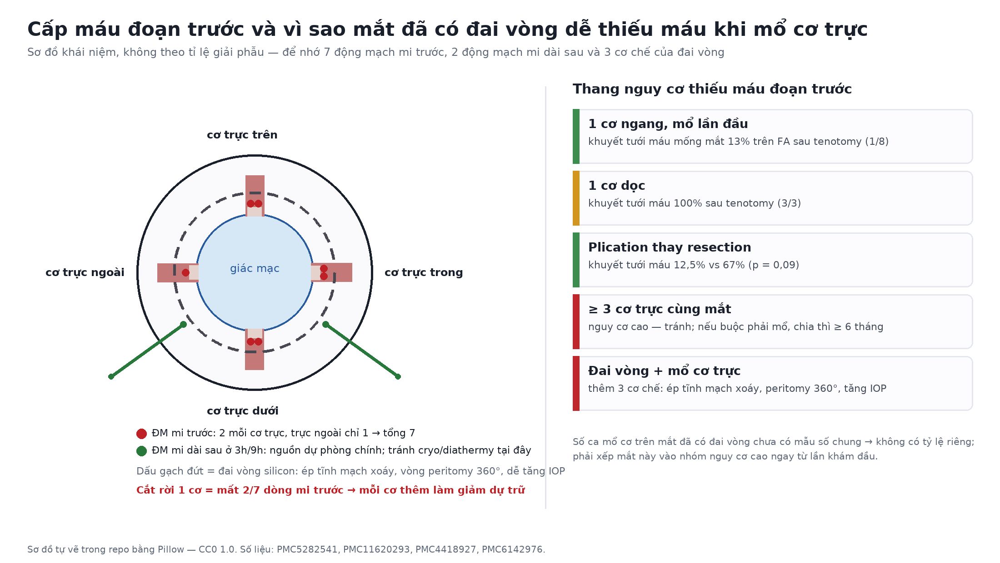
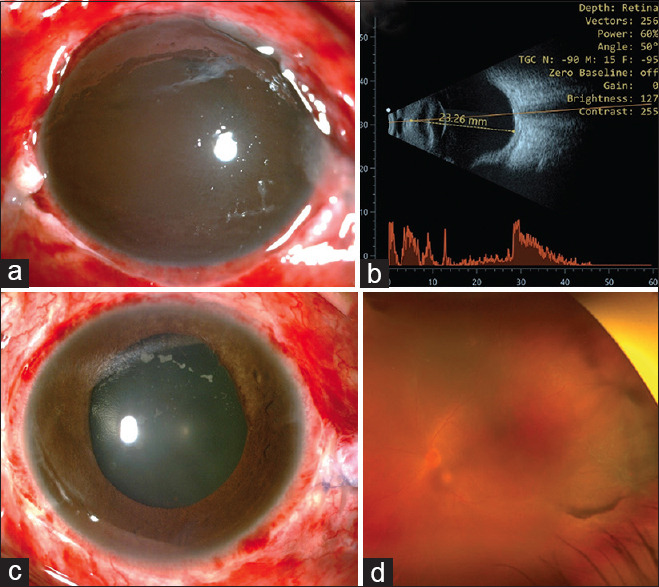
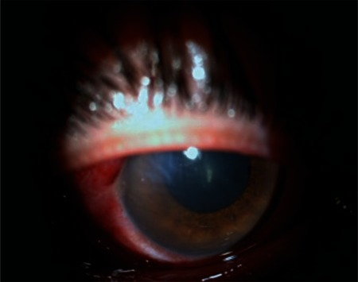
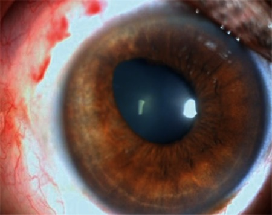

3222 — Thiếu máu đoạn trước sau mổ cơ trực trên mắt đã đặt đai vòng / Anterior segment ischemia after rectus surgery in a buckled eye
Tags: pattern:phu-giac-mac pattern:te-bao-tien-phong pattern:dong-tu-meo pattern:di-nguyen-mong-mat pattern:ha-nhan-ap pattern:tang-nhan-ap vung:mat vung:giac-mac vung:co-van-nhan anatomy:dong-mach-mi-truoc anatomy:co-truc protocol:iris-FA protocol:AS-OCTA score:Olver-Lee incidentaloma:dai-silicon
Mức chắc chắn (certainty): tổng hợp y văn (literature synthesis) — ghép 3 ca lâm sàng có ảnh (tuổi 18 — PMC11620293; 46 — PMC5282541; 60 — PMID 27124792), tổng quan Pineles 2018 (PMC5811735), nghiên cứu tưới máu mống mắt bằng FA (14 bệnh nhân — PMC4418927), OCTA 10 mắt (PMC6142976) và 99 mắt SS-AS-OCTA (PMC13657135), cùng ca ASI sau đai vòng (PMID 22550771; PMC11999081). Nhóm không có bệnh nhân của mình; chỗ suy luận đánh dấu [suy luận].
Ranh giới với bài đã có: 3218 trả lời lác/hạn chế vận nhãn sau đai; 1499 trả lời song thị cảm giác sau mổ bong võng mạc; 3219 là song thị sau van glôcôm. Bài này chỉ trả lời một câu: mắt đã có đai vòng, vừa mổ cơ trực, nay phù giác mạc + tiền phòng phản ứng + đồng tử méo — có phải thiếu máu đoạn trước, chấm điểm thế nào, và xử trí ra sao?
Câu chốt — sáu con số phải thuộc: (1) Đoạn trước được nuôi bởi 7 động mạch mi trước (anterior ciliary artery, ACA) — 2 cho mỗi cơ trực, riêng cơ trực ngoài chỉ 1 — cộng 2 động mạch mi dài sau (long posterior ciliary artery, LPCA); cắt rời một cơ = mất 2/7 dòng mi trước (PMC5282541). (2) Tần suất ASI có triệu chứng sau mổ lác 1/13.000 – 1/30.000, và được cho là thấp hơn thực tế vì thể nhẹ không chẩn đoán (PMC5282541; PMC13657135). (3) Nguy cơ tăng vọt khi > 3 cơ trực trong một lần mổ hoặc mổ cơ trực lần hai trong vòng 6 tháng (PMC5282541). (4) Trên FA mống mắt, khuyết tưới máu gặp 67% sau tenotomy so với 12,5% sau plication; với cơ trực dọc là 100% (3/3) so với 25% (1/4) (PMC4418927). (5) OCTA mống mắt đo được mức giảm 57% → 55% toàn mống mắt và 56% → 53% ở góc phần tư cạnh cơ mổ, ngay ngày 1 (PMC6142976). (6) Đa số hồi phục tưới máu trong 2 tuần, chậm nhất 12 tuần; nhưng đồng tử méo và teo mống mắt từng vùng là di chứng thường tồn tại (PMC5282541; PMC11620293).
1. Tổng quan bệnh học – cơ chế hình ảnh
1.1 Vì sao đoạn trước "sống" bằng 7 nhánh nhỏ
- Giải phẫu: mỗi cơ trực mang các động mạch mi trước đi trên thân cơ rồi xuyên củng mạc gần chỗ bám để vào vòng động mạch lớn của mống mắt (major arterial circle of the iris). Có 7 ACA: trực trên, trực dưới, trực trong mỗi cơ 2 nhánh; trực ngoài chỉ 1. Nguồn dự phòng là 2 LPCA đi vào ở kinh tuyến 3 giờ và 9 giờ (PMC5282541; PMC11620293).
- Vì sao cắt cơ lại nguy hiểm: khi cắt rời (disinsert) một cơ trực, toàn bộ ACA trên thân cơ bị cắt theo — không phải "bóc tách nhẹ" mà là mất một nhánh động mạch tận. Một cơ ngang thường không đủ gây triệu chứng vì LPCA và tuần hoàn bàng hệ của kết mạc–Tenon bù được; nhưng mỗi cơ thêm vào ăn vào dự trữ, và cơ trực dọc có tác động lớn hơn cơ ngang lên tuần hoàn đoạn trước (PMC5282541; PMC5811735).

Sơ đồ tự vẽ (CC0): đếm 7 ACA — trực ngoài chỉ 1 nhánh — và 3 cơ chế cộng thêm của đai vòng. Không theo tỉ lệ giải phẫu.
1.2 Ba cơ chế riêng của đai vòng: vì sao "mắt đã có đai" là một mắt khác
Đai vòng không chỉ là "một miếng silicon dưới cơ". Nó làm giảm tưới máu đoạn trước bằng ba đường độc lập:
- Ép tĩnh mạch xoáy (vortex vein) → ứ huyết hắc mạc, giảm chênh áp lực động–tĩnh mạch, giảm dòng vào đoạn trước (PMID 22550771).
- Vòng rạch kết mạc 360° (peritomy) cắt tuần hoàn kết mạc–Tenon quanh rìa — đúng lớp mạch bàng hệ bù cho ACA; đường rạch fornix giữ được một phần tuần hoàn này (PMC11620293).
- Tăng nhãn áp trong và sau mổ (đặc biệt khi không dẫn lưu dịch dưới võng mạc, bơm hơi/khí, hoặc siết đai quá tay) → giảm áp lực tưới máu; cộng thêm cryo/diathermy dày ở 3 giờ và 9 giờ có thể chạm chính LPCA (PMC11620293).
- Hệ quả thực hành: một mắt đã có đai vòng bước vào mổ cơ với dự trữ đã bị tiêu một phần; mổ 1 cơ trực dọc ở mắt này không tương đương mổ 1 cơ trực dọc ở mắt lành. Văn liệu không có mẫu số cho riêng nhóm "đai vòng + mổ cơ", nên phải xếp nguy cơ cao ngay từ đầu (PMC11620293; PMID 22550771).
1.3 Vì sao các dấu hiệu lại là phù giác mạc, tế bào tiền phòng và đồng tử méo
- Mống mắt và thể mi thiếu máu → hàng rào máu–thủy dịch vỡ → protein và bạch cầu tràn vào tiền phòng: thấy flare, tế bào 3–4+, fibrin, có thể máu thoáng qua (streak hyphema) (PMC11620293; PMC5282541).
- Nội mô giác mạc sống bằng glucose và oxy từ thủy dịch; khi thủy dịch giảm tưới máu, bơm Na⁺/K⁺-ATPase của nội mô yếu đi → phù giác mạc, nếp gấp Descemet, striate keratopathy. Vì vậy phù giác mạc là dấu sớm và nổi bật nhất, đôi khi xuất hiện trước cả tế bào (PMC11620293).
- Cơ vòng mống mắt (sphincter) thiếu máu → đồng tử giãn giữa, méo, mất trương lực, thường không đáp ứng với ánh sáng và không hồi phục hoàn toàn (PMC5282541; PMID 27124792).
- Thể mi thiếu máu → giảm sản xuất thủy dịch → nhãn áp thấp; nhưng giai đoạn viêm có thể tăng nhãn áp (ca 1: 30 mmHg ngày 4) do phản ứng viêm và mảnh vỡ tế bào. Vì vậy không được dùng nhãn áp để loại trừ ASI (PMC11620293).
- Mạn tính: thiếu oxy kéo dài → VEGF → rubeosis mống mắt, glôcôm tân mạch; đục thể thủy tinh trong 3 tháng ở thể nặng; hiếm nhất là phthisis bulbi (PMID 22550771; PMC5282541).
1.4 Vì sao thể nhẹ nhiều hơn người ta tưởng
- FA mống mắt ở 14 bệnh nhân cho thấy khuyết tưới máu sau tenotomy 67% (4/6) so với 12,5% (1/8) sau plication; riêng cơ trực dọc: 100% (3/3) sau tenotomy so với 25% (1/4) sau plication (p = 0,09 và 0,14 — cỡ mẫu nhỏ) (PMC4418927).
- SS-AS-OCTA ở 99 mắt mổ cơ ngang: thay đổi nhẹ và khu trú sau mổ 1 cơ, rộng hơn và thoáng qua sau mổ phối hợp cơ chéo; về gần mức nền sau 1 tháng; không ca nào ASI lâm sàng (PMC13657135).
- Kết luận: "khuyết tưới máu" là hiện tượng thường gặp và thường im lặng; ASI lâm sàng mới là biến cố hiếm. Việc của bác sĩ là phân biệt thể im lặng với thể có triệu chứng, và không để thể nhẹ tiến triển thành thể nặng ở mắt đã có đai.
2. Mẫu hình + chẩn đoán phân biệt theo thời điểm và mức độ
Mẫu hình (pattern): mắt vừa mổ cơ trực, trong 7 ngày đầu xuất hiện phù giác mạc + phản ứng tiền phòng mạnh nhưng không có mủ tiền phòng, dịch kính trong, đồng tử méo/giãn.
- Theo thời điểm:
- 12–24 giờ: nghĩ TASS (toxic anterior segment syndrome) hoặc phản ứng cryo hơn là ASI; ASI thường rõ dần ngày 2–5 (trong 3 ca: ngày 1, ngày 4, ngày 6).
- Ngày 2–7: ASI là chẩn đoán chính ở mắt có ≥ 1 cơ trực dọc, ≥ 2 cơ cùng mắt, hoặc có đai vòng.
- Sau 1–3 tháng: teo mống mắt từng vùng, đồng tử méo, đục thể thủy tinh = di chứng; xuất hiện rubeosis là dấu tiên lượng xấu.
- Theo mức độ (Olver–Lee): độ I giảm tưới máu mống mắt; độ II thêm dấu hiệu đồng tử; độ III thêm viêm màng bồ đào; độ IV thêm bệnh giác mạc (keratopathy) (PMC5282541).
- Theo cơ chế: thiếu máu do cắt cơ (ACA) · do đai (tĩnh mạch xoáy + peritomy) · do tăng nhãn áp · do cryo 3/9 giờ (LPCA) · do bệnh nền (đái tháo đường, tăng huyết áp, bệnh hồng cầu hình liềm, tăng độ quánh máu, Basedow, xạ trị đầu–cổ, liệu pháp estrogen) (PMC5282541; PMC11620293; PMC10656632).
Gamut theo bối cảnh mắt có đai:
- Mổ cơ trực dọc (SR/IR) — nguy cơ cao nhất.
- Mổ ≥ 2 cơ cùng mắt, hoặc mổ lại < 6 tháng.
- Đai siết quá tay, peritomy 360°, không dẫn lưu dịch, cryo diện rộng.
- Bệnh nền làm giảm dòng: hồng cầu hình liềm, Basedow, đái tháo đường, tăng huyết áp, estrogen.
3. Bảng so sánh phân biệt (ma trận đối chiếu)
| Thực thể (entity) | Hình ảnh / dấu lâm sàng điển hình | Chốt vào (rule-in) | Chốt loại (rule-out) | Gợi ý xác nhận |
|---|---|---|---|---|
| ASI | Phù giác mạc + nếp Descemet, tế bào 3–4+, fibrin, đồng tử giãn méo, có thể hạ hoặc tăng nhãn áp; khởi phát ngày 1–6 | Đồng tử méo/giãn không đáp ứng + phù giác mạc + phản ứng tiền phòng nặng sau mổ cơ trực, dịch kính trong | Không có mủ tiền phòng, không viêm dịch kính; nhưng không loại trừ nếu hai bệnh cùng tồn tại | FA mống mắt (khuyết tưới máu), SS-AS-OCTA (giảm mật độ mạch), phân độ Olver–Lee |
| TASS | Phù giác mạc lan từ rìa tới rìa, xuất hiện 12–24 giờ, phản ứng tiền phòng nhưng đồng tử còn tròn, đáp ứng corticoid nhanh | Cùng lô vật tư/thuốc, nhiều mắt trong cùng ngày | Đồng tử méo + teo mống mắt từng vùng không do TASS | Bệnh sử vật tư, đáp ứng corticoid trong 24–48 giờ |
| Viêm nội nhãn | Đau tăng, mủ tiền phòng, viêm dịch kính, siêu âm có echo dày trong dịch kính | Mủ tiền phòng + viêm dịch kính trên siêu âm | Dịch kính trong trên B-scan làm ít khả năng, không loại trừ tuyệt đối | Cấy thủy dịch/dịch kính, B-scan, nội soi dịch kính |
| Glôcôm cấp / UGH sau đai | Tiền phòng nông, nhãn áp cao, đau; UGH có máu tiền phòng và tăng nhãn áp | Tiền phòng nông + nhãn áp cao đơn thuần, hết sau khi hạ nhãn áp | Đồng tử méo + phù giác mạc không tương xứng mức nhãn áp | Đo nhãn áp, soi góc, siêu âm sinh học |
| Ngộ độc thuốc / khô giác mạc | Chấm nhuộm biểu mô, phù nhẹ, không phản ứng tiền phòng | Chỉ tổn thương biểu mô, hết khi ngừng thuốc | Tế bào tiền phòng 3+ và đồng tử méo | Soi đèn khe sau ngừng thuốc 48 giờ |
| Tắc động mạch mắt (OAO) | Mù nặng, không điểm đỏ anh đào, hắc mạc không đổ đầy trên ICGA | Thị lực mất gần hoàn toàn + dấu võng mạc/hắc mạc | Thị lực còn tốt, đáy mắt bình thường loại trừ | 278 — FA/ICGA |
| Viêm màng bồ đào sau cryo | Tế bào tiền phòng, không teo mống mắt, đỡ sau 3–5 ngày corticoid | Không có khuyết tưới máu mống mắt | Teo mống mắt từng vùng về sau | Theo dõi 1–3 tháng, FA nếu nghi |
4. Protocol chụp/đánh giá + hệ phân độ
4.1 Trước mổ — đếm cơ, đếm nguồn máu, đếm bệnh nền
- Đếm cơ trực sẽ cắt rời trong một lần mổ: ≥ 3 cơ là ngưỡng cảnh báo; nếu cần hơn, chia thì ≥ 6 tháng để tuần hoàn bàng hệ hình thành (PMC5282541).
- Ghi nhận đai vòng: đai #240/#279, vị trí, độ căng, số mối khâu; hỏi cryo/diathermy trước đó ở 3 giờ và 9 giờ (PMC11620293).
- Bệnh nền: đái tháo đường, tăng huyết áp, hồng cầu hình liềm (làm điện di huyết sắc tố khi có chỉ định — ca 1 đã làm và bình thường), bệnh tăng độ quánh, Basedow, xạ trị đầu–cổ, estrogen (PMC5282541; PMC10656632).
- Đo nền: thị lực, nhãn áp, độ sâu tiền phòng, đường kính/độ tròn đồng tử, soi đèn khe có đèn khe hẹp, chụp ảnh.
4.2 Trong mổ — bốn việc giảm nguy cơ
- Giữ mạch mi: dùng plication thay resection, tenotomy bán phần/chẻ thân cơ, hoặc kéo cơ mà không cắt rời chỗ bám — plication giữ được mạch mi và giảm khuyết tưới máu (PMC4418927; PMC5811735).
- Tránh 3 giờ và 9 giờ: hạn chế cryo/diathermy ở hai kinh tuyến này để bảo vệ LPCA (PMC11620293).
- Kiểm soát nhãn áp: dẫn lưu dịch dưới võng mạc hoặc chọc tiền phòng khi cần độ cao đai; không siết đai quá tay; tránh adrenaline nội nhãn (PMC11620293).
- Rạch kết mạc tiết chế: ưu tiên đường rạch fornix và peritomy giới hạn ở mắt nguy cơ cao (PMC11620293).
4.3 Sau mổ — theo dõi và hình ảnh
- Khám đèn khe ngày 1, 3, 7 ở mắt đai vòng + ≥ 1 cơ trực dọc hoặc ≥ 2 cơ: ghi tế bào/flare, phù giác mạc, độ tròn đồng tử, nhãn áp, độ sâu tiền phòng.
- FA mống mắt (iris fluorescein angiography): chuẩn vàng để thấy khuyết tưới máu từng vùng; chụp trước mổ khi có thể và ngày 1–3 khi nghi (PMC4418927; PMID 22550771).
- SS-AS-OCTA (bước sóng ~1050 nm): đo mật độ mạch (%) theo góc phần tư, so sánh trước–sau; không xâm lấn, tốt hơn FA ở mống mắt sẫm màu; chưa có ngưỡng lâm sàng (PMC6142976; PMC13657135).
- AS-OCT: đo độ dày giác mạc để theo dõi phù và đáp ứng điều trị [suy luận từ nguyên lý — chưa có ngưỡng riêng cho ASI].
- B-scan siêu âm 10 MHz: khi không nhìn rõ đáy mắt — dịch kính trong làm ASI khả năng hơn, echo dày/viêm dịch kính đổi hướng sang viêm nội nhãn (PMC11620293; PMID 27124792).
- CT hốc mắt: chỉ khi nghi đai di lệch/lộ hoặc khối hốc mắt (xem 3218).
4.4 Phân độ Olver–Lee và xử trí
flowchart TD
A["Mắt có đai vòng, vừa mổ cơ trực"] --> B{"Đau và phù giác mạc trong 7 ngày?"}
B -->|Không| C["Theo dõi thường quy ngày 1-3-7"]
B -->|Có| D{"Tế bào tiền phòng >= 3+ và đồng tử méo?"}
D -->|Không| E["Loại trừ TASS, viêm nội nhãn, glôcôm cấp"]
D -->|Có| F["ASI — phân độ Olver-Lee"]
F --> G{"Độ I-II"}
G -->|Có| H["Corticoid tại chỗ mạnh + cycloplegic + theo dõi mỗi ngày"]
G -->|Không| I["Thêm corticoid toàn thân + kiểm soát nhãn áp"]
I --> J{"Cải thiện sau 48-72 giờ?"}
J -->|Có| K["Giảm liều dần trong 3-4 tuần"]
J -->|Không| L["Hội chẩn võng mạc — cân nhắc tháo đai/explant"]
E --> M["Cấy thủy dịch-dịch kính, B-scan, soi góc"]
| Độ | Dấu hiệu | Xử trí trong y văn | Theo dõi |
|---|---|---|---|
| I | Giảm tưới máu mống mắt, chưa có dấu đồng tử | Corticoid tại chỗ, cycloplegic; bỏ adrenaline/sympathomimetic | Đèn khe ngày 1–3; FA/OCTA nếu có |
| II | Thêm đồng tử giãn/méo | Như độ I + theo dõi sát nhãn áp | 1 tuần, 1 tháng |
| III | Thêm viêm màng bồ đào (tế bào 4+, fibrin) | Corticoid toàn thân + tại chỗ + cycloplegic | 48–72 giờ/lần đến khi hết fibrin |
| IV | Thêm bệnh giác mạc (phù nặng, nếp Descemet) | Như độ III; cân nhắc tháo đai nếu không cải thiện | Theo dõi 3 tháng vì nguy cơ đục thể thủy tinh |
- Thuốc theo ca đã báo: ca 1 dùng prednisolone tại chỗ mỗi giờ, atropine 3 lần/ngày, moxifloxacin 6 lần/ngày, timolol 2 lần/ngày, prednisolone uống 40 mg giảm liều (PMC11620293); ca 2 dùng dexamethasone 0,1%/5 mL 16 lần/ngày, cyclopentolate 3 lần/ngày, fluocortolone uống 20 mg × 3 lần/ngày (PMC5282541). Không có RCT cho phác đồ này — xem mục 7.
- Tháo đai/explant dành cho thể nặng không đáp ứng; đây là đánh đổi có thật: tháo đai vòng làm tái bong 25% (4/16) so với 0% (0/24) khi chỉ cắt một đoạn đai (p = 0,020; PMC7738227 — số liệu đã đối chiếu ở bài 3218).
5. Biến thể bình thường và cạm bẫy
- "Tế bào" sau cryo: bụi sắc tố và tế bào viêm sau cryo có thể trông như phản ứng mạnh; đồng tử méo + phù giác mạc + teo mống mắt từng vùng mới là dấu của ASI. Đừng chẩn đoán ASI chỉ vì "tiền phòng có tế bào".
- Khuyết tưới máu im lặng: FA sau tenotomy cho khuyết tới 67% mà không triệu chứng — không được gọi mọi khuyết tưới máu là ASI lâm sàng, nhưng cũng không được bỏ ở mắt có đai (PMC4418927).
- Nhãn áp cao đánh lừa: ca 1 có nhãn áp 30 mmHg ngày 4; tăng nhãn áp không loại trừ ASI và cũng không đủ gọi glôcôm cấp. Phải đọc độ sâu tiền phòng + đồng tử + mức phù giác mạc cùng lúc (PMC11620293).
- Hạ nhãn áp đánh lừa: hạ nhãn áp do thể mi thiếu máu dễ bị gán cho rò cyclodialysis hoặc bong hắc mạc; siêu âm giúp phân biệt bong hắc mạc thanh dịch (xem 1484).
- Hai bệnh cùng lúc: đã có ca ASI + viêm nội nhãn MRSA ở bệnh nhân Basedow 6 ngày sau mổ cơ, với FA mống mắt mất tưới máu và viêm dịch kính trên siêu âm (PMID 27124792). Dịch kính trong không loại trừ viêm nội nhãn khi lâm sàng nặng.
- Sai lầm hay gặp (satisfaction of search): thấy phù giác mạc → nghĩ "TASS/độc tính thuốc" → bỏ qua đồng tử méo; hoặc thấy đau nhiều → nghĩ viêm nội nhãn → bỏ qua thiếu máu ở mắt vừa mổ cơ dọc.
- Cạm bẫy điều trị: nhỏ adrenaline nội nhãn để giãn đồng tử trong mổ ở mắt nguy cơ cao là yếu tố thúc đẩy ASI (PMC11620293); prostaglandin làm tăng viêm — tránh trong giai đoạn cấp [suy luận dược lý].
6. Tự lượng giá — Blind Quiz
Ca 1 — Nam 18 tuổi, hội chứng thận hư dùng corticoid 15 năm, được đặt đai #279 + đai vòng #240 kèm cryo vì bong võng mạc. Ngày 4 sau mổ: đau nhẹ, mắt đỏ, nhìn mờ; tiền phòng tế bào 4+, flare 3+, nhãn áp 30 mmHg, không mủ tiền phòng.

- Gợi ý lâm sàng: siêu âm dịch kính trong, võng mạc áp; không sốt.
- Câu hỏi: (1) Ba chẩn đoán phân biệt hàng đầu? (2) Dấu nào trên ảnh giúp chuyển chẩn đoán sang thiếu máu đoạn trước? (3) Vì sao không đặt ống dẫn lưu tiền phòng ngay?
Bấm để hiện đáp án (findings + chẩn đoán)
- Dấu hiệu: (a) phù giác mạc lan tỏa + nếp Descemet, tiền phòng tế bào 4+; (c) ngày 11 còn fibrin co và teo mống mắt vùng trên; (b) siêu âm dịch kính trong, võng mạc áp.
- Chẩn đoán: ASI thể nhẹ–trung bình sau đai vòng + cryo (không có mủ tiền phòng, dịch kính trong). Phân biệt: TASS do adrenaline nội nhãn, viêm nội nhãn, viêm do cryo.
- Chốt: đồng tử méo + teo mống mắt từng vùng khi giác mạc đã trong — dấu này không có trong TASS/viêm do cryo.
- Xử trí trong ca này: corticoid tại chỗ mỗi giờ + atropine + kháng sinh dự phòng + timolol, corticoid uống giảm liều; không chọc tiền phòng vì không có mủ và siêu âm không gợi viêm dịch kính. Sau 6 tuần: thị lực 3/60, teo mống mắt vùng trên, nhãn áp kiểm soát.
- Nguồn ảnh: PMC11620293 Fig. 2, CC BY-NC-SA 4.0 (nguyên bản, giữ đủ 4 panel a–d).
Ca 2 — Nam 46 tuổi, liệt dây VI sau tai nạn. Đã khép trực trong 6 mm; 10 tháng sau mổ chuyển toàn bộ thân trực trên và trực dưới ra trực ngoài kèm chỉ Foster. Ngày 1 sau mổ: phù giác mạc, nếp Descemet, tiền phòng 3+ tế bào, đồng tử giãn méo, nhãn áp hơi thấp, thị lực 20/40.

- Gợi ý lâm sàng: không đau nhiều, không mủ tiền phòng, đáy mắt bình thường.
- Câu hỏi: (1) Đếm số ACA bị cắt trong hai thì mổ? (2) Vì sao trực dọc nguy hiểm hơn trực ngang? (3) Điều trị và tiên lượng di chứng?
Bấm để hiện đáp án (findings + chẩn đoán)
- Dấu hiệu: phù giác mạc + nếp Descemet, 3+ tế bào, đồng tử giãn méo, hạ nhãn áp nhẹ, thị lực 20/40.
- Số ACA: thì 1 cắt trực trong = 2 ACA; thì 2 cắt rời trực trên + trực dưới = 4 ACA; tổng 6/7 ACA trong 10 tháng — vượt xa ngưỡng "3 cơ trực" và mổ lại trong vòng 6 tháng không được tôn trọng.
- Chẩn đoán: ASI độ II–III (có dấu đồng tử + viêm màng bồ đào).
- Xử trí: dexamethasone tại chỗ 16 lần/ngày + cyclopentolate + fluocortolone uống; 1 tuần hết phù giác mạc, 1 tháng thị lực 20/20, hết song thị, còn đồng tử méo.
- Bài học: nếu buộc phải mổ thêm cơ ở mắt đã mổ, chờ ≥ 6 tháng và giữ mạch mi (plication/tenotomy bán phần) (PMC5282541; PMC4418927).
- Nguồn ảnh: PMC5282541 Fig. 2, CC BY 4.0 (nguyên bản).

Đáp án mở rộng: 1 tháng sau, giác mạc trong, chỉ còn đồng tử méo — di chứng thường tồn tại (PMC5282541 Fig. 3, CC BY 4.0).
Ca 3 — Bệnh nhân liệt dây VI, mắt đã đặt đai vòng; cần mổ cả trực trên và trực dưới. Trên sơ đồ dưới đây, hãy đếm nguồn máu còn lại và nêu 4 biện pháp giảm nguy cơ.
- Gợi ý: mắt đã có peritomy 360° và đai siết vừa phải; nhãn áp trước mổ 16 mmHg.
- Câu hỏi: (1) Cắt rời SR + IR mất bao nhiêu ACA? (2) Vì sao đai làm ngưỡng nguy cơ thấp hơn? (3) Bốn việc phải làm khác đi?
Bấm để hiện đáp án (findings + chẩn đoán)
- Đếm: SR 2 + IR 2 = 4/7 ACA bị cắt; LPCA còn nhưng đã bị ép bởi đai và peritomy 360° làm mất bàng hệ kết mạc.
- Vì sao đai làm nặng: ba cơ chế cộng dồn — ép tĩnh mạch xoáy, mất tuần hoàn quanh rìa, tăng nhãn áp khi không dẫn lưu (PMID 22550771; PMC11620293).
- Bốn việc khác đi: (1) plication/tenotomy bán phần thay cắt rời; (2) dẫn lưu dịch hoặc chọc tiền phòng để giữ nhãn áp thấp; (3) tránh cryo/diathermy 3 và 9 giờ; (4) không dùng adrenaline nội nhãn, rạch fornix giới hạn, và cân nhắc mổ từng cơ cách ≥ 6 tháng.
- Nguồn ảnh: sơ đồ tự vẽ trong repo, CC0 1.0 (số liệu PMC5282541, PMC11620293, PMC4418927, PMC6142976).
7. Câu hỏi nghiên cứu & điểm chưa đồng thuận (tính đến 11/2026)
[Tranh cãi] Ở mắt đã đặt đai vòng cần mổ ≥ 2 cơ trực, tháo đai trước có giảm ASI nhiều hơn nguy cơ tái bong võng mạc không?
- Đã biết: ASI sau đai vòng đã được báo cáo với rubeosis và với NAION (PMID 22550771; PMC11999081); tháo đai vòng làm tái bong 25% (4/16) vs 0% (0/24) khi chỉ cắt một đoạn (PMC7738227).
- Chưa rõ: không có nghiên cứu nào so sánh "tháo đai rồi mổ cơ" với "giữ đai và mổ cơ có bảo tồn mạch mi"; ngưỡng số cơ và độ căng đai để đổi chiến lược cũng chưa có.
- Hướng nghiên cứu: đoàn hệ tiến cứu/registry mắt đai vòng có mổ cơ, đầu ra ASI lâm sàng + FA/OCTA + tái bong; hoặc Delphi đồng thuận về thứ tự thủ thuật.
- Nguồn: PMC11620293 (2024); PMC11999081 (2025); PMC7738227.
[Khoảng trống] Ngưỡng mật độ mạch mống mắt trên SS-AS-OCTA nào dự báo ASI lâm sàng?
- Đã biết: OCTA đo được giảm 2% toàn mống mắt và 2,6% ở góc phần tư cạnh cơ mổ ngay ngày 1 ở 10 mắt (PMC6142976); ở 99 mắt mổ cơ ngang, thay đổi thoáng qua, về nền sau 1 tháng, không ca ASI (PMC13657135).
- Chưa rõ: chưa có ngưỡng % hay diện tích khuyết tưới máu phân biệt "giảm sinh lý" với "nguy cơ ASI"; giá trị tiên lượng ở mắt có đai và ở cơ trực dọc chưa được nghiên cứu.
- Hướng nghiên cứu: nghiên cứu độ chính xác chẩn đoán, chụp OCTA trước mổ + ngày 1 + tuần 1, đối chiếu với FA mống mắt và biến cố lâm sàng.
- Nguồn: PMC6142976 (2018); PMC13657135 (2026); PMC4418927 (2015).
[Khác biệt thực hành] Corticoid toàn thân và thời điểm tháo đai trong ASI nặng: dùng ngay hay chờ 48–72 giờ?
- Đã biết: ba ca dùng corticoid tại chỗ + toàn thân và hồi phục thị lực trong 1 tuần–1 tháng, còn đồng tử méo (PMC11620293; PMC5282541); ca nặng được khuyến cáo tháo đai/explant (PMC11620293).
- Chưa rõ: không có RCT; thời điểm tháo đai, liều corticoid tối ưu và tiêu chí "không đáp ứng" khác nhau giữa các trung tâm.
- Hướng nghiên cứu: RCT/đoàn hệ tiến cứu phân tầng theo độ Olver–Lee, so sánh corticoid toàn thân sớm với tháo đai sớm, đầu ra thị lực 3 tháng + nhãn áp + rubeosis.
- Nguồn: PMC11620293 (2024); PMC5282541 (2017); PMID 27124792 (2017).
Bài liên quan chéo
- 3218 — Lác trong do đai vòng quanh củng mạc: đai kéo cơ, đai di chuyển hay HES?
- 1499 — Song thị và lác sau mổ bong võng mạc KHÔNG do đai
- 1493 — Biến chứng đai hoàng điểm: khi nào tháo đai
- 1484 — Bong hắc mạc sau mổ mắt
- 3212 — Hội chứng mắt nặng (HES) ở cận thị cao
- 3219 — Song thị và hạn chế vận nhãn sau van dẫn lưu glôcôm
- 3221 — Viêm củng mạc do nấm sau đặt đai/ống silicon
- 278 — Tắc động mạch mắt (OAO)
- 411 — Siêu âm nhãn cầu
Ảnh
images/3222_asi-doan-truoc_SlitLamp_PMC11620293-Fig2.jpg— ca 18 tuổi: (a) phù giác mạc ngày 4; (b) siêu âm dịch kính trong; (c) ngày 11 còn fibrin và teo mống mắt; (d) đáy mắt (PMC11620293, Fig. 2, CC BY-NC-SA 4.0, nguyên bản).images/3222_asi-doan-truoc_SlitLamp_PMC11620293-Fig3.jpg— 6 tuần: teo mống mắt vùng trên, đáy mắt và OCT hoàng điểm (PMC11620293, Fig. 3, CC BY-NC-SA 4.0).images/3222_asi-doan-truoc_SlitLamp_PMC5282541-Fig2.jpg— ngày 1 sau mổ 3 cơ trực: phù giác mạc, nếp Descemet, đồng tử méo, 3+ tế bào (PMC5282541, Fig. 2, CC BY 4.0).images/3222_asi-doan-truoc_SlitLamp_PMC5282541-Fig3.jpg— 1 tháng: hết phù, còn đồng tử méo (PMC5282541, Fig. 3, CC BY 4.0).images/3222_asi-doan-truoc_So-do-cap-mau_CC0.png— sơ đồ cấp máu đoạn trước và thang nguy cơ, tự vẽ (CC0 1.0).
Không dùng để chẩn đoán độc lập khi chưa có người hướng dẫn.